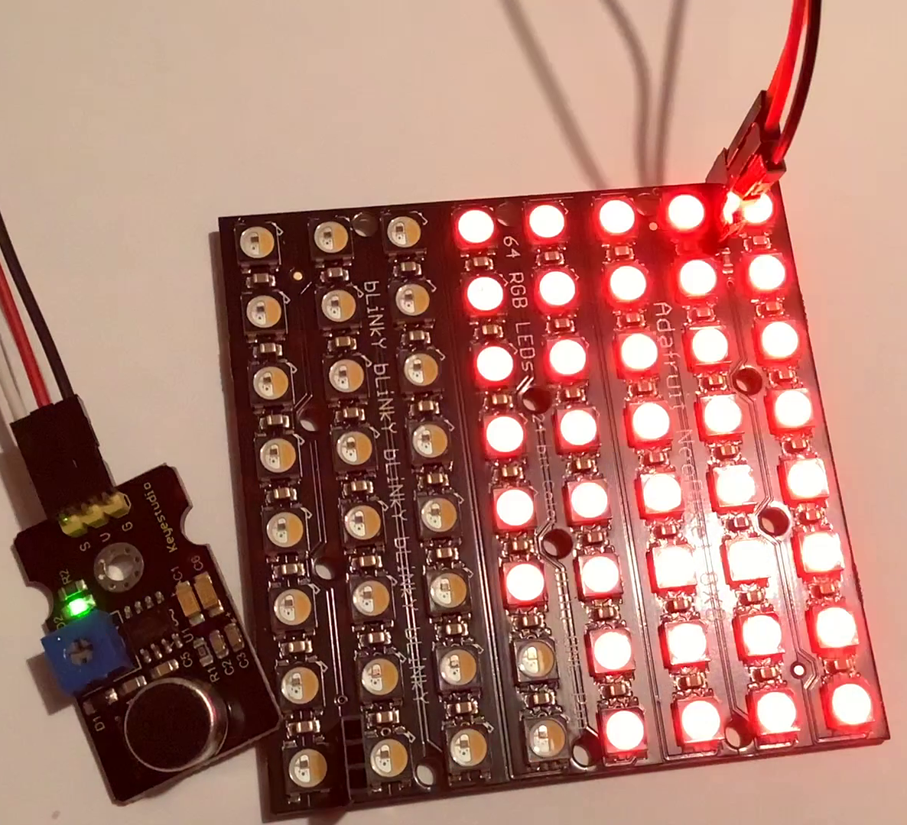

Wir bauen eine voll funktionsfähige Alarmanlage.

- Leuchtdioden
- Bewegungsmelder (PIR-Sensor)
- Passiver Buzzer
- Infrarot-Fernbedienung
Wir bauen ein digitales Thermometer und verwenden es, um Messreihen am Computer aufzuzeichnen.
- Thermofühler
- OLED-Display zur Darstellung der Messwerte
- Graphische Ausgabe am Computer
Wir bauen aus einem Mikrofon, einem Arduino UNO und einer LED-Matrix eine Partylicht,das dem Rhythmus der Musik folgt.

In folgendem Video könnt ihr die Funktion des Lichtes sehen: YouTube Video Partylicht
Auf Grundlage des Scru-Fe-Roboters von rtheiss bauen wir einen Roboter, der Hindernisse erkennt und ihnen ausweichen kann.
- Motorsteuerung
- Ultraschall-Entfernungsmesser
- Servomotoren